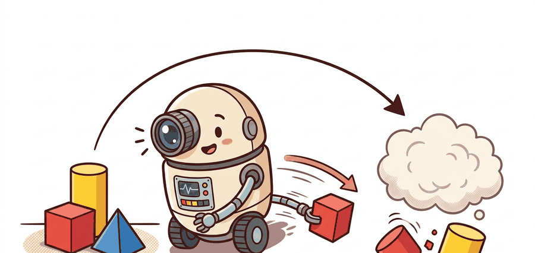

"A robot that thinks slowly and acts quickly still needs a treaty between the two governments."
A Systems Architect

This section builds on the System 1 / System 2 framing introduced in section 3.6 and the affordance representation covered in section 27.5; reviewing those two sections will sharpen the discussion of what belongs in the context packet. The dual-system interface concept recurs in section 51.3 alongside long-horizon planning, and section 35.4 extends the argument by asking how to evaluate whether these architectures actually generalize across embodiments.
Dual-system architectures split the robot stack into a slower, semantically rich reasoning module and a faster motor module. The appeal is obvious: language-conditioned planning and real-time control pull the system in opposite directions. The risk is equally obvious: if the interface is vague, the fast layer cannot execute what the slow layer "meant."
Why Split The System At All?
High-level language reasoning and low-level motor control live on different clocks. A policy that reasons over long-horizon context, open-vocabulary instructions, and spatial semantics may only need to update every few hundred milliseconds. A wrist controller closing on a moving object may need updates an order of magnitude faster. Dual-system VLAs acknowledge that asymmetry instead of forcing one module to do both jobs on the same schedule.
GR00T N1 and N1.5 explicitly present this design as a System 2 vision-language reasoning module feeding a System 1 diffusion action model. Helix and Gemini Robotics make related moves with different packaging: a richer semantic layer provides task or scene context, then a downstream motor policy converts that context into reactive motion. The details differ, but the shared systems idea is a boundary between semantic deliberation and motor execution.
The success of a dual-system model depends less on the slogan "reason then act" than on what exactly crosses the boundary: goals, waypoints, affordance maps, language tokens, latent plans, or action proposals.
A Timed Interface
A clean formalization uses a slow context variable $c_k$ and a fast control loop:
$$c_k = g_\psi(o_{1:t_k}, q, h_{k-1}), \qquad a_t = \pi_\theta(x_t, c_k), \qquad t_k \leq t < t_{k+1}.$$
The slow module $g_\psi$ updates at times $t_k$ using accumulated observations, instructions, and history. The fast module $\pi_\theta$ consumes the current state $x_t$ and the latest context packet $c_k$ on every control step until a new slow update arrives. This equation forces the designer to specify the refresh rate and the contents of $c_k$.
Algorithm: Dual-System Inference Loop
Input: observation history $o_{1:t}$, natural-language instruction $q$, slow-module parameters $\psi$, fast-policy parameters $\theta$, slow refresh period $T_s$, total horizon $T$
Output: executed action sequence $a_1, a_2, \ldots, a_T$; updated context history $h_K$
- Initialize history $h_0 \leftarrow \emptyset$ and step counter $t \leftarrow 0$.
- Compute the initial context packet: $c_0 \leftarrow g_\psi(o_{1:0},\, q,\, h_0)$.
- For each slow epoch $k = 0, 1, 2, \ldots$ with $t_k = k \cdot T_s$:
- $\quad$ Run the fast motor loop for steps $t = t_k, \ldots, t_{k+1} - 1$:
- $\quad\quad$ Observe current state $x_t$; compute action $a_t = \pi_\theta(x_t,\, c_k)$.
- $\quad\quad$ Execute $a_t$; if an abort trigger fires (perceptual novelty $\delta_t > \delta_{\max}$), break to step 7.
- $\quad$ Append new observations to history: $h_{k+1} \leftarrow h_k \cup \{(o_{t_k:t_{k+1}}, a_{t_k:t_{k+1}})\}$.
- $\quad$ Refresh the context packet: $c_{k+1} \leftarrow g_\psi(o_{1:t_{k+1}},\, q,\, h_{k+1})$.
- $\quad$ If the task goal is satisfied or $t \geq T$, terminate and return $(a_{1:t},\, h_{k+1})$.
- Increment $t$ and $k$; continue from step 3.
Code Fragment 1 makes that timing split concrete with a toy scheduler.
# Refresh the semantic plan every three control steps.
# The fast controller reuses the latest plan until a new one arrives.
observations = ["drawer closed", "drawer opening", "drawer open", "grasping mug", "lifting mug"]
latest_plan = None
for step, obs in enumerate(observations):
if step % 3 == 0:
latest_plan = f"plan@{step}: open then grasp"
print(f"step={step} obs={obs} using={latest_plan}")
step=0 obs=drawer closed using=plan@0: open then grasp step=1 obs=drawer opening using=plan@0: open then grasp step=2 obs=drawer open using=plan@0: open then grasp step=3 obs=grasping mug using=plan@3: open then grasp step=4 obs=lifting mug using=plan@3: open then grasp
The expected output is a trace where the fast motor loop reuses a still-valid plan until the world state crosses a semantic boundary and the slow planner refreshes at `plan@3`. If the planner refreshed on every step, the architecture would be semantically expressive but latency-heavy; if it never refreshed, the controller would drift on stale intent.
Fixed-rate plan refresh (the step % N == 0 pattern) is rarely enough on its own. Wire a second refresh trigger keyed to a perceptual event flag, such as a grasp-contact boolean or a segmentation-confidence drop below a threshold, so the slow module also re-plans mid-chunk when the scene changes unexpectedly. In openpi-style serving stacks, pass this flag as a side-channel alongside the observation dict rather than encoding it in the image tokens, which keeps the semantic model's input distribution clean. In a ROS 2 deployment, send a GoalHandle.abort() from the fast-loop node and immediately re-trigger the slow planner action rather than letting the executor silently reuse the stale goal, because a cancelled action leaves a clear log entry while a silently stale plan does not.
The choice of what to put inside $c_k$ has concrete consequences. A language summary ("move the cup to the tray") is easy to generate but gives the fast module no geometric anchor, so grasp orientation and approach direction must be re-derived from raw perception on every step. A 3-D waypoint or grasp pose is geometrically precise but becomes stale the moment the object shifts. An affordance heatmap over the current image is richer but costs more to compute at slow-module rate. GR00T N1.5 uses a latent embedding that blends visual and language context, trading interpretability for compactness. Helix passes whole-body pose targets. Gemini Robotics-ER encodes spatial relations from an embodied-reasoning step. Each choice moves the burden: richer context reduces fast-module guesswork but increases bandwidth and staleness risk when the scene changes quickly.
The toy scheduler makes the timing issue visible in a dozen lines. In practice, openpi-style serving stacks, OpenVLA inference wrappers, ONNX Runtime or TensorRT deployment paths, and ROS 2 action servers are where you log plan refresh rate, action latency, and stale-context failures. The maintained stack handles batching, device placement, middleware timing, and runtime orchestration so the experimenter can inspect the semantic-to-motor handoff itself.
| Tool or stack | What it anchors | Why it matters here |
|---|---|---|
| openpi | Plan-to-action serving boundary | Useful for inspecting where semantic context is handed to a motor policy. |
| OpenVLA | Open VLA inference and adaptation path | Lets a lab test whether the slow semantic context actually improves downstream action selection. |
| ONNX Runtime or TensorRT | Low-latency deployment path | Critical when the fast loop has to stay real-time after a large semantic model is added. |
| ROS 2 actions | Typed execution interface with feedback | Useful for exposing cancelation, completion, and stale-plan interrupts explicitly. |
How Current Systems Differ
| System | Slow module role | Fast module role | Main caveat |
|---|---|---|---|
| GR00T N1 / N1.5 | Vision-language understanding and task context | Diffusion transformer for real-time motor generation | Strong architecture story, but most labs will still need to test embodiment transfer themselves. |
| Helix | High-level visual-language reasoning for humanoid tasks | Low-latency whole-body control | The strongest evidence is vendor-reported, so treat claims as frontier watch unless reproduced independently. |
| Gemini Robotics / ER | Embodied reasoning over spatial, visual, and language context | VLA action generation and specialization to target embodiments | Impressive reports, but openness and independent replication remain limited compared with open stacks. |
The most common failure in dual-system deployment is stale-context drift: the slow module issues a plan ("grasp the red cup on the left") and the fast loop executes it faithfully, but by the time the wrist arrives, a human has moved the cup. The fast controller has no way to detect the mismatch because it only sees proprioception and the current context packet, not the semantic intent behind it. The result is a confident, well-executed grasp on empty air. Systems without an explicit abort trigger keyed to perceptual novelty and runtime monitoring will reproduce this failure on every scene change that outpaces the planner's refresh rate.
Closed vendor systems can be technologically important without yet being textbook-grade evidence for a specific claim. Separate architecture lessons from benchmark claims unless an independent evaluation artifact exists.
A humanoid sorting task may need a slow module to infer "the left bin is for fragile objects" from language and scene context, while the fast module handles balance, wrist orientation, and grasp closure at control rate. If a new object slips, the fast layer may have to abort before the planner ever refreshes. That abort path is part of the architecture, not a postscript.
Dual-system VLAs are a little like a chef and a line cook sharing one kitchen. If the order tickets are late or vague, the fastest hands in the room still plate the wrong dish.
What exactly would you put inside the slow context packet for a drawer-opening task: a language summary, a grasp waypoint, an affordance heatmap, or a full action chunk? Defend your answer in one sentence.
NVIDIA's GR00T N1.5 page reports stronger generalization and language following than N1, while Figure's Helix updates and Google's Gemini Robotics reports push on richer whole-body or embodied-reasoning capabilities. The unresolved scientific question is whether these dual-system interfaces will converge on a common abstraction or remain tightly coupled to each vendor stack.
Dual-system robot foundation models matter because they acknowledge the mismatch between semantic reasoning time and motor control time. Their true quality lies in the clarity, timing, and fail-safe behavior of the interface between those loops.
Design a dual-system interface for a humanoid kitchen task. Specify the slow update rate, the fast control rate, the contents of the context packet, and the abort rule when fast execution detects a mismatch with the planner's assumptions.
What's Next?
Section 35.4 turns from architecture to evidence by asking how large behavior models should actually be evaluated, especially when aggregate success can hide embodiment-specific failure.
Bjorck et al. (2025). "GR00T N1: An Open Foundation Model for Generalist Humanoid Robots."
The clearest open reference for the dual-system framing in humanoid foundation models.
NVIDIA Research. "GR00T N1.5."
Useful for current architecture and performance claims, with the usual caveat that it is an official report rather than an independent benchmark paper.
An important frontier-watch source for whole-body VLA design in humanoids.
Google DeepMind (2025). "Gemini Robotics: Bringing AI into the Physical World."
The main source for Gemini Robotics and Gemini Robotics-ER, including the embodied-reasoning framing used in this section.